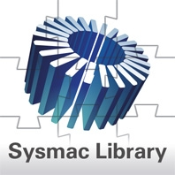

Sysmac Library is POU Libraries (Function Block and Function) provided for NJ/NX/NY-series Controller.
Please download it from following URL and install to Sysmac Studio.
http://www.ia.omron.com/sysmac_library/
Building Automation
Industrial Automation
Power Automation & Safety


Bangladesh Distributor
SYSMAC-XR[][][]
Sysmac Library

The Sysmac Library for the NJ/NX/NY Controller provides Function Blocks packed with know-how that makes advanced control easy.
Sysmac Library downloads
You can download the Sysmac Library for the NJ/NX/NY Controller that provides Function Blocks.
about this Product Family
Related Contents
- Automation Systems
- Machine Automation Controllers
- Special Contents
- Features
- Lineup
- Specifications
- Dimensions
- Catalog
last update: November 01, 2016
Sysmac Library
| Product | Features | Model | Stand-
ards |
|---|---|---|---|
| MC Test Run
Library |
The MC Test Run Library is used to perform a test run that the MC
Function Module is used. In this library, a processing to operate axes that an MPG (i.e. a manual pulse generator) was used isprovided. You can use this library to reduce manpower of programming when creating a test run program that an MPG was used. |
SYSMAC-XR001 | --- |
| MC Command
Table Library |
The MC Command Table Library is used to continuously perform
positioning that the MC Function Module is used. You can use this library together with motion control instructions of the NJ/NX/NY-series Controller. The program that multiple motion control instructions are used will be unnecessary by using this library. |
SYSMAC-XR002 | |
| MC Tool Box
Library |
The MC Tool Box Library is used to implement a program to perform
motor control in the user program. The processings such as PID processing and filter processing are provided in this library. You can use this library to reduce manpower of programming when creating a program to perform motor control. |
SYSMAC-XR003 | |
| EtherCAT
G5 Series Library |
The EtherCAT G5 Series Library is used to initialize the absolute encoder,
back up and restore the parameters for an OMRON G5-series Servo Drive with built-in EtherCAT communications. You can use this library to reduce manpower of programming when implementing the processing for a Servo Drive. |
SYSMAC-XR004 | |
| EtherCAT
N-Smart Series Library |
The EtherCAT N-Smart Series Library is used to back up and restore the
parameters for an OMRON E3NW Sensor Communications Unit (an EtherCAT type). You can use this library to reduce manpower of programming when implementing the processing for a Sensor Communications Unit. |
SYSMAC-XR005 | |
| Vibration
Suppression Control Library |
The Vibration Suppression Library is used to suppress residual vibration
caused by the operation of machines. You can use this library together with motion control instructions of the NJ/NX/NY-series Controller. |
SYSMAC-XR006 | |
| Temperature
Control Library |
The Temperature Control Library is used to perform a high-level
temperature control. You canuse this library together with analog control instructions of the NJ/NX/NY-series Controller. |
SYSMAC-XR007 | |
| Device
Operation Monitor Library |
The Device Operation Monitor Library is used to monitor the operation
of devices such as air cylinders, sensors, motors, and other devices. |
SYSMAC-XR008 | |
| Adept Robot
Control Library |
The Adept Robot Control Library is used to directly control Adept Robots
from NJ/NX-series Controller. You can use this library to control any types of robots like parallel, SCARA and articulated from NJ/NX-series Controller with common instructions and a common programming method. |
SYSMAC-XR009 | |
| Weighing
Control Library |
The Weighing Control Library is used to perform weighing control of raw
materials for industrial products with NX-series Load Cell Input Unit NX- RS1201. Also, functions that are used to display and correct measurement values are included. You can use this Weighing Control Library to reduce programming work when you implement processing for weighing in each device. |
SYSMAC-XR010 | |
| EtherCAT
1S Series Library |
The EtherCAT 1S Series Library is used to initialize the absolute encoder,
back up and restore the parameters for an OMRON 1S-series Servo Drive with built-in EtherCAT communications. You can use this library to reduce manpower of programming when implementing the processing for a Servo Drive. |
SYSMAC-XR011 | |
| Packaging
Machine Library |
The Packaging Machine Library is used to control various packaging
machines with NJ/NX-series CPU Unit or NY-series Industrial PC. The Packaging Machine Library enables accurate and high-speed packaging processing, and reduction of programming man-hour as well as man-hour to start up packaging system. The use of PackML-compliant PackML Support Function Blocks facilitates compliance with the PackML standard. |
SYSMAC-XR012 | |
| Servo Press
Library |
The Servo Press Library is used to generate the operation commands
and monitor the operations of actuator for servo presses with NJ/NX-series CPU Unit or NY-series Industrial PC. You can use the Servo Press Library to realize the high-speed and high precision servo press control and reduce programming work. |
SYSMAC-XR013 | |
| Dimension
Measurement Library |
Dimension Measurement Library is the system which connects the
NJ/NX-series CPU Unit or NY-series Industrial PC, ZW-7000 Confocal Fiber Displacement Sensor Controller, and E9NC-TA0 Contact-Type Smart Sensor through EtherCAT communications. It is used when you perform various dimension measurements. When you use the Dimension Measurement Library, you can improve measurement accuracy, enlarge measurement range, and reduce programming work. |
SYSMAC-XR014 | |
| Safety
System Monitor Library |
The Safety System Monitor Library is used to monitor the safety system
information. You can use this library to manage the information of the running safety system. |
SYSMAC-XR015 |
Automation Software
Please purchase a DVD and licenses the first time you purchase the Sysmac Studio. DVDs and licenses are available individually.
The license does not include the DVD.
| Product | Specifications | Model | Stand-
ards |
||
|---|---|---|---|---|---|
| Number of
licenses |
Media | ||||
| Sysmac
Studio Standard Edition Ver.1.[][] |
The Sysmac Studio is the software that provides an
integrated environment for setting, programming, debugging and maintenance of machine automation controllers including the NJ/NX Series CPU Units, NY-series Industrial PC, EtherCAT Slave, and the HMI. Sysmac Studio runs on the following OS. Windows 7 (32-bit/64- bit version)/Windows 8 (32- bit/64-bit version)/Windows 8.1 (32-bit/64-bit version)/Windows 10 (32-bit/64-bit version) The Sysmac Studio Standard Edition DVD includes Support Software to set up EtherNet/IP Units, DeviceNet slaves, Serial Communications Units, and Support Software for creating screens on HMIs (CX- Designer). For details, refer to the Sysmac Integrated Catalogue (Cat. No. P072). |
---
(Media only) |
DVD | SYSMAC-SE200D | --- |
| 1 license
* |
- | SYSMAC-SE201L | --- | ||
* Multi licenses are available for the Sysmac Studio (3, 10, 30, or 50 licenses).
last update: November 01, 2016